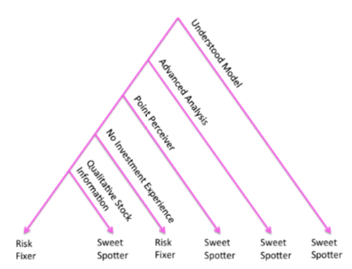

Risk Fixers and Sweet Spotters: A Study of the Different Approaches to Using Visual Sensitivity Analysis in an Investment Scenario


Authors. Thomas Torsney-Weir, Shahrzad Afroozeh, Michael Sedlmair, and Torsten Möller
Venue. EuroVis (2018) Short Paper
Type. Short Paper
Abstract. We present an empirical study that illustrates how individual users' decision making preferences and biases influence visualization design choices. Twenty-three participants, in a lab study, were shown two interactive financial portfolio optimization interfaces which allowed them to adjust the return for the portfolio and view how the risk changes. One interface showed the sensitivity of the risk to changes in the return and one did not have this feature. Our study highlights two classes of users. One which preferred the interface with the sensitivity feature and one group that does not prefer the sensitivity feature. We named these two groups the ``risk fixers'' and the ``sweet spotters'' due to the analysis method they used. The ``risk fixers'' selected a level of risk which they were comfortable with while the ``sweet spotters'' tried to find a point right before the risk increased greatly. Our study shows that exposing the sensitivity of investment parameters will impact the investment decision process and increase confidence for these ``sweet spotters.'' We also discuss the implications for design.